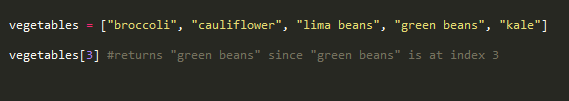
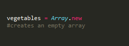
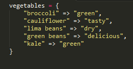
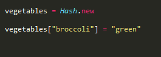
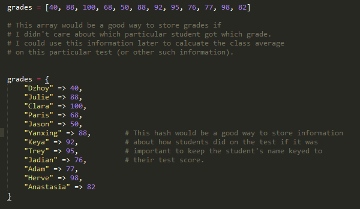

What are they and when should I use them?
Arrays and hashes are two ways that Ruby has of collecting and storing data. This blog post will examine them individually and provide some guidance about deciding which one to use.
Arrays
Arrays are used to store a list of values, whether numbers or not. Each element in the array has what is called an index, which functions as a key to that particular element. The first element is assigned: 0, the next: 1, and so on.
You can create an array using literal notation, used above, and array constructor notation, demonstrated below.
Hashes
A hash is a collection of key-value pairs. Each key is unique and is associated with a value. These values can be repeated so that different keys share the same value, but keys cannot be duplicated.
The two most common ways of constructing hashes are hash literal notation, used above, and hash constructor notation, demonstrated below.
How to Choose
Arrays are good for storing values when the key is not important. It's also more efficient to access array elements. Hashes on the other hand are a bit more flexible. The deciding factor in determining which one to use is to figure out if your data needs two specific values bound together (as in hashes), or if just a list of values is fine (as in arrays.)
Hashes and arrays can be used in a much more complex manner than discussed here, but hopefully this has been a useful introduction into how to use the two.